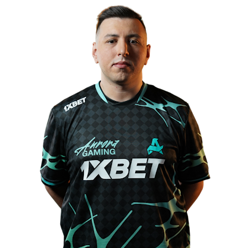

İsmailcan "XANTARES" Dörtkardeş, Counter-Strike (CS:GO ve CS2) dünyasının en tanınan ve başarılı Türk profesyonel espor oyuncularından biridir. Üstün nişan alma yeteneği (aim), agresif oyun tarzı ve literatüre geçen "XANTARES Peek" (Xantares dikizlemesi) hareketiyle dünya çapında büyük bir üne sahiptir